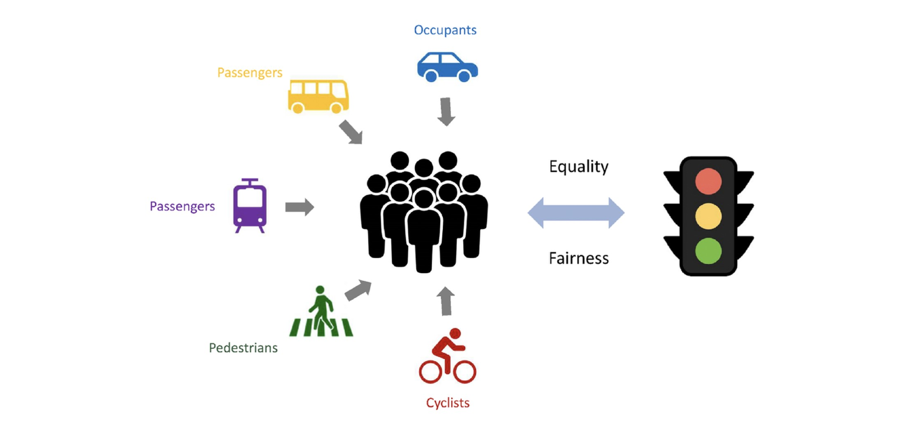
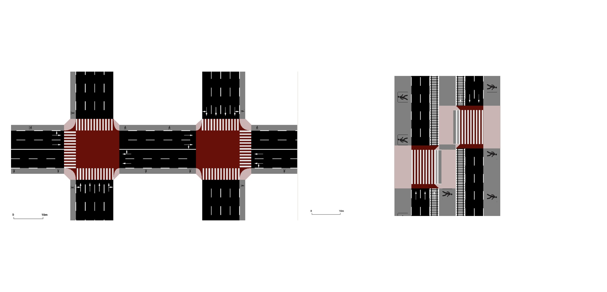
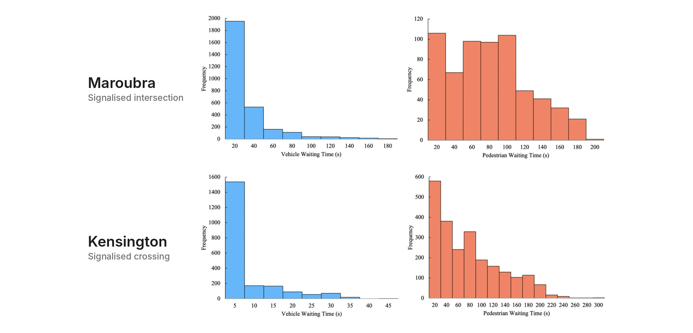
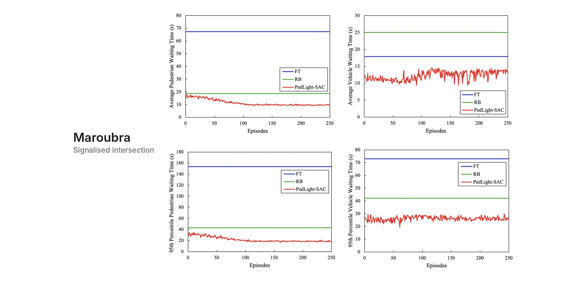
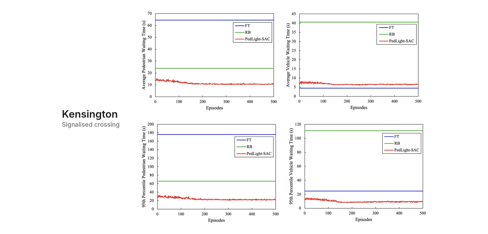
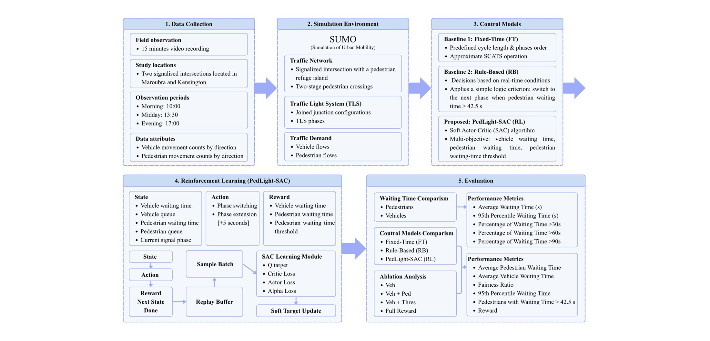
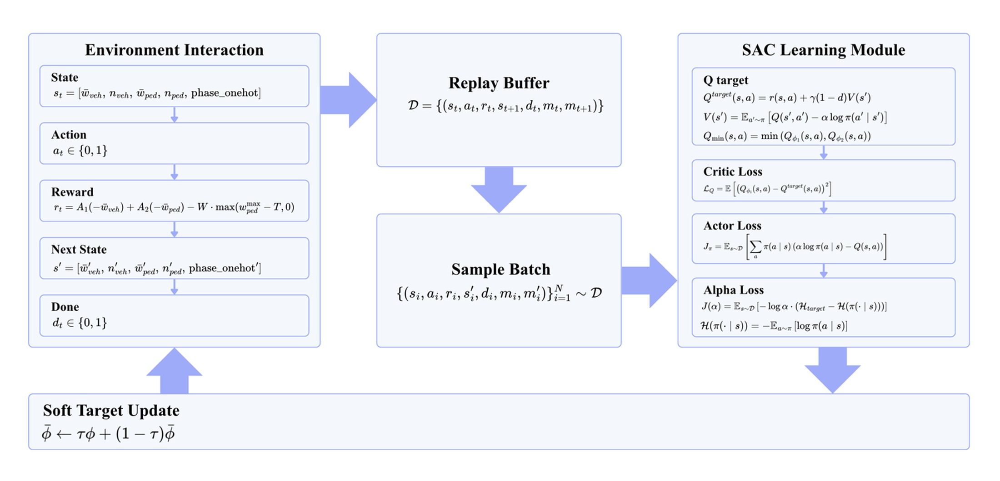

PedLight-SAC
PedLight-SAC is a reinforcement learning model (Soft Actor-Critic) for traffic signals that cuts both average and extreme pedestrian waits with minimal or no cost to vehicles. It was trained in SUMO at two crossings on Anzac Parade, Sydney, and compared against fixed-time control, which approximates current SCATS operation.
📍 Maroubra · Signalised Intersection with Median Island
average pedestrian delay
−58 s
Average pedestrian wait fell from 67.3 s to 9.7 s, an 86% reduction.
average vehicle delay
−5 s
Average vehicle wait fell from 17.9 s to 12.9 s, a 28% reduction.
95th percentile pedestrian wait
−135 s
95th percentile pedestrian wait fell from 153.7 s to 18.8 s, an 88% reduction.
95th percentile vehicle wait
−47 s
95th percentile vehicle wait fell from 73.0 s to 26.2 s, a 64% reduction.
📍 Kensington · Signalised Pedestrian Crossing with Light Rail Median Platform
average pedestrian delay
−54 s
Average pedestrian wait fell from 64.5 s to 10.6 s, an 84% reduction.
average vehicle delay
+2 s
Average vehicle wait rose only slightly, from 4.5 s to 6.5 s.
95th percentile pedestrian wait
−154 s
95th percentile pedestrian wait fell from 176.0 s to 22.3 s, an 87% reduction.
95th percentile vehicle wait
−15 s
95th percentile vehicle wait fell from 24.7 s to 9.5 s, a 62% reduction.

Adapted from “Towards fair lights: A multi-agent masked deep reinforcement learning for efficient corridor-level traffic signal control,” by X. Zhang, L. S. Chan, N. Nassir, and M. Sarvi, 2025, Communications in Transportation Research, 5, Article 100203.
Fair signals for everyone.
Signal timing should balance delay across all road users, not just keep traffic moving.

Two study sites on Anzac Parade.
The Maroubra intersection and the Kensington two-stage crossing, rebuilt in SUMO.

Today’s signals favour cars.
At both intersections, median wait for vehicles: 0-2 s; for pedestrians: 52-67 s.

Maroubra results. Both pedestrian and vehicle performance improved simply by speeding up the traffic signal cycle.

Kensington results. Pedestrian delay drops sharply for a minimal 2 s vehicle trade-off, while 95th percentile waits improve for both pedestrians and vehicles.

Research framework. From field counts and SUMO modelling to three control models, training and evaluation.

How PedLight-SAC learns. The agent observes the crossing, stores experience in a replay buffer, and updates its actor and critics with SAC.
Project highlights
GIS
Mapping Equity
Who can reach amenities in Blacktown.
Hot spot analysis compared with population density and IRSAD.

Urban design
Reconnecting Homes
A walkable centre for East Killara.
New street grid, mixed-use main street, and zoning, height and FSR controls.

Flood resilience
Bridging Community
Linked rooftops for Windsor.
Everyday shared spaces that become shelter and escape routes in a flood.